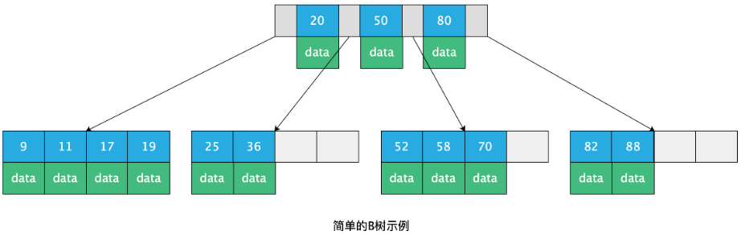
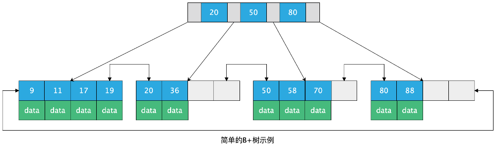
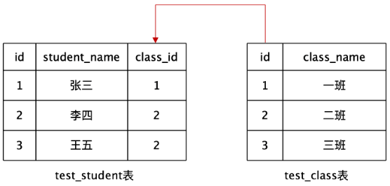
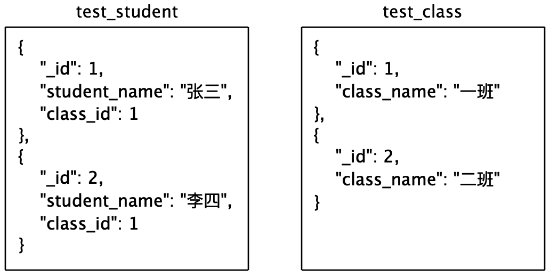
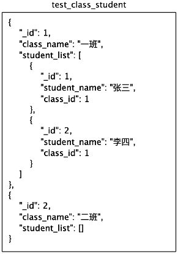

今天在网上看到一篇很有意思的关于B+树和B树的探讨，值得收藏，所以写下此篇文章。
网上有些文章会写到B树不适合做文件存储系统的索引结构，那么它真的那么不堪吗？
一、B树和B+树的结构与特点
首先，看一下B树和B+树的结构图：
B树：

通过上图可以发现B树的特点为：
- 1、每个节点都存储数据data
- 2、叶子节点之间无相邻指针关联
B+树：

通过上图对B+树的结构的观察，其特点为：
- 1、数据data只存储在叶子节点上
- 2、所有叶子节点上都通过指针进行关联
所以，综上观察，得出以下结论：
1、B树存储结构中，数据存储在各个节点上，在做单一查询时，其查询性能不稳定，最好的情况为O(1)，但是整体来说，单一查询还是B树较为合适。
但在B树上做遍历查询时，由于其没有指针对各节点进行关联，所以效率不高，每次遍历都需要从根节点开始查找。
2、B+树存储结构中，由于其数据只存储叶子节点上，所以在做单一查询时，查询性能固定，每次都从根节点开始查找，最后查到叶子节点上。
但在B+树上做遍历查询时，由于其叶子节点上存在关联指针，所以遍历时不需要回到根节点遍历，只需要对叶子节点进行遍历即可，所以B+树的范围查询效率较高。
二、继续分析
那么是不是可以这么想：由于MongoDB中主要做单一查询，所以用B树呢？而MySQL遍历查询场景应用比较频繁，所以采用B+树呢？
那么问题来了：为什么MySQL中做数据遍历多，而MongoDB中数据遍历少呢？
带着这些疑问，继续往下分析：
我们知道，MySQL属于关系型数据库，MongoDB属于非关系型数据库。
举个例子：此时，我们有两个逻辑需要建表存储数据，分别为：
1、学生信息；2、班级信息。
其逻辑关系为：一个班级对应多个学生，一个学生只能有一个班级，即一对多的关系
在关系型数据库中分为一对一，一对多，多对多三种关系，其中一对多的关系，使用两张表即可：

此时在查询class_name=’一班’的所有学生时，sql为：【class_name列建立索引】
1 | select * from test_student where class_id in ( |
以上sql就涉及到数据遍历查询的操作。也就是说会到B+树的叶子节点上进行遍历查询。
在非关系型数据库MongoDB中，如果以MySQL设计表的思想去建立数据类型就是：

以MySQL的思想去设计MongoDB的话，对于MongoDB的B树结构就是一种浪费了。
MongoDB之所以使用B树结构，肯定是不希望使用者以关系型数据库的思想去建立数据表结构。
所以，考虑B树的结构，在MongoDB中，应该这样创建表：

此时，查询班级为 “一班” 的查询语句就为：【class_name列建索引】
1 | db.class.find( {class_name: '一班'} ) |
这样就是一个单一查询，不需要遍历逐行匹配，最好的情况下，一次就能查到。
三、总结
由于关系型数据库和非关系型数据库在设计方式上的不同，导致在关系型数据库中，遍历查询十分普遍，且严格来说B+树的单一查询效率也很均衡，所以采用B+树比较合理。
而非关系型数据库中，单一查询十分常见，所以采用B树，相比较B+树来说，虽然效率不均衡，但是总体来说单一查询效率还是比B+树高的。